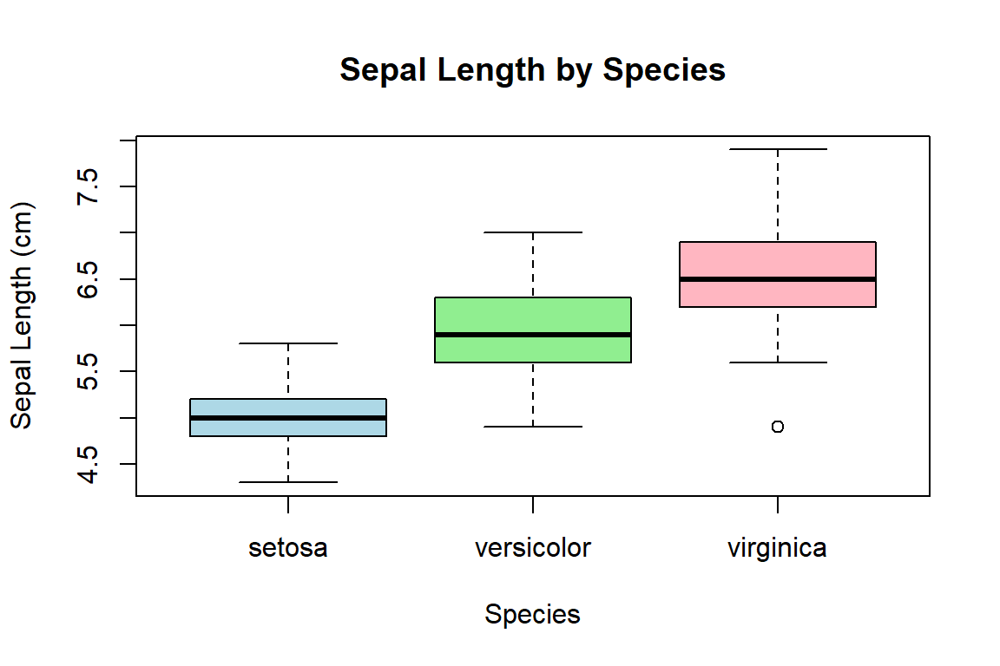

summary(cars)The tiny Quarto guide
Background Information
This is an R Markdown document. Instructions for writing these documents and background information can be found in the book written by Xie, Allaire, and Grolemund (2018) When you execute code within the document, the results appear beneath the code. This file contains some instructions how to write code and texts in dynamic Quarto documents. For more detailed information, refer to the Quarto Markdown Basics.
📄 Introduction to Quarto Markdown
Quarto enables you to create dynamic documents by combining plain text with executable code. Understanding Markdown syntax is essential for formatting your documents effectively. Below are the fundamental elements:
1. Headings
Use the # symbol to create headings. The number of # symbols indicates the heading level:
# Heading Level 1
## Heading Level 2
### Heading Level 32. Emphasis
- Italic: Wrap text with one asterisk or underscore:
*italic*or_italic_ - Bold: Wrap text with two asterisks or underscores:
**bold**or__bold__ - Bold and Italic: Combine both:
***bold and italic***
3. Lists
Unordered Lists: Use
-,*, or+followed by a space:- Item 1 - Item 2Ordered Lists: Use numbers followed by a period:
1. First item 2. Second item
4. Links and Images
Hyperlinks:
[Link Text](URL)Example:
[Quarto Documentation](https://quarto.org/docs/)Images:
Example:

5. Blockquotes
Use > to create blockquotes:
> This is a blockquote.6. Code
Inline Code: Use backticks
`to enclose code within a line:I can now compute the mean from 1 to 5 within my document: 3Code Blocks: Use triple backticks to create code blocks. It is possible to apply different programming languages:
like R:
or Python:
1 + 17. Tables
Create tables using pipes | and hyphens -:
| Column 1 | Column 2 |
|----------|----------|
| Data 1 | Data 2 |8. Mathematical Notation
Quarto supports LaTeX-style math expressions:
Inline Math: Use single dollar signs:
$...$Example:
The equation of a line is $y = mx + b$.Display Math: Use double dollar signs:
$$ E = mc^2 $$
9. Callout Blocks
Highlight important information using callout blocks:
::: note
This is a note.
:::
::: warning
This is a warning.
:::10. YAML Front Matter
At the beginning of your .qmd file, include metadata enclosed by ---:
---
title: "The tiny Quarto guide"
author: "Julius Fenn"
date: today
format:
html:
toc: true
toc-depth: 3
html-math-method: katex
bibliography: Library_subset.bib
biblio-style: apalike
link-citations: true
---Ensure proper indentation and spacing in the YAML section to avoid errors.
Real Application Case
Please read Quarto Using R and play around with the following code:
Let’s demonstrate a real-world example using the built-in iris dataset, which contains measurements of different iris flower species.
We begin by displaying the first few rows of the dataset. We’ll use a code chunk with echo = TRUE to display both the code and its output:
# Show the first six rows of the iris dataset
head(iris) Sepal.Length Sepal.Width Petal.Length Petal.Width Species
1 5.1 3.5 1.4 0.2 setosa
2 4.9 3.0 1.4 0.2 setosa
3 4.7 3.2 1.3 0.2 setosa
4 4.6 3.1 1.5 0.2 setosa
5 5.0 3.6 1.4 0.2 setosa
6 5.4 3.9 1.7 0.4 setosaIf you want to show only the output and not the code, use the chunk option echo = FALSE:
Sepal.Length Sepal.Width Petal.Length Petal.Width
Min. :4.300 Min. :2.000 Min. :1.000 Min. :0.100
1st Qu.:5.100 1st Qu.:2.800 1st Qu.:1.600 1st Qu.:0.300
Median :5.800 Median :3.000 Median :4.350 Median :1.300
Mean :5.843 Mean :3.057 Mean :3.758 Mean :1.199
3rd Qu.:6.400 3rd Qu.:3.300 3rd Qu.:5.100 3rd Qu.:1.800
Max. :7.900 Max. :4.400 Max. :6.900 Max. :2.500
Species
setosa :50
versicolor:50
virginica :50
✅
echo = FALSEis useful in final reports where you want to focus on the results without showing the underlying R code.
You can also suppress the output using eval = FALSE, which means the code won’t be run:
# This code won't be executed
plot(iris$Sepal.Length, iris$Sepal.Width)Now, let’s perform a simple data analysis:
Mean Sepal Length by Species
We can compute the average sepal length for each species using the aggregate() function. Here, we use message = FALSE and warning = FALSE to suppress potential messages or warnings.
agg_means <- aggregate(Sepal.Length ~ Species, data = iris, mean)
agg_means Species Sepal.Length
1 setosa 5.006
2 versicolor 5.936
3 virginica 6.588💡
message = FALSEandwarning = FALSEare useful for cleaner outputs, especially when functions produce startup messages or minor warnings.
Plotting
We now generate a boxplot of Sepal Length by Species and interpret the result.
boxplot(Sepal.Length ~ Species, data = iris,
main = "Sepal Length by Species",
xlab = "Species", ylab = "Sepal Length (cm)",
col = c("lightblue", "lightgreen", "lightpink"))
The highest average sepal length is 6.588
🧠 Inline code lets us reference live results directly in text. This ensures your interpretations remain in sync with your data.
Global Chunk Options
To avoid repeating the same chunk options (like echo = FALSE, message = FALSE, etc.) in every code block, you can set them globally at the beginning of your document using the knitr::opts_chunk$set() function.
This is done in a setup chunk, which is typically not shown in the output.
knitr::opts_chunk$set(
echo = FALSE,
include = FALSE,
message = FALSE,
warning = FALSE,
fig.align = "center"
)Code is evaluated, but not shown or included:
References
Xie, Yihui, J. J. Allaire, and Garrett Grolemund. 2018. R Markdown: The Definitive Guide. New York: Chapman; Hall/CRC. https://doi.org/10.1201/9781138359444.